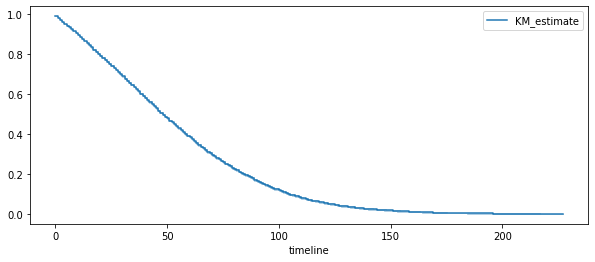

Analyse de survie en pratique#
[1]:
from jyquickhelper import add_notebook_menu
add_notebook_menu()
[1]:
Quelques données#
On récupère les données disponibles sur open.data.gouv.fr Données hospitalières relatives à l’épidémie de COVID-19. Ces données ne permettent pas de construire la courbe de Kaplan-Meier. On sait combien de personnes rentrent et sortent chaque jour mais on ne sait pas quand une personne qui sort un 1er avril est entrée.
[2]:
import numpy.random as rnd
import pandas
df = pandas.read_csv(
"https://www.data.gouv.fr/fr/datasets/r/e3d83ab3-dc52-4c99-abaf-8a38050cc68c",
sep=";",
)
gr = df[["jour", "rad", "dc"]].groupby(["jour"]).sum()
diff = gr.diff().reset_index(drop=False)
diff.head()
[2]:
| jour | rad | dc | |
|---|---|---|---|
| 0 | 2020-03-18 | NaN | NaN |
| 1 | 2020-03-19 | 695.0 | 207.0 |
| 2 | 2020-03-20 | 806.0 | 248.0 |
| 3 | 2020-03-21 | 452.0 | 151.0 |
| 4 | 2020-03-22 | 608.0 | 210.0 |
[3]:
def donnees_artificielles(hosp, mu=14, nu=21):
dt = pandas.to_datetime(hosp["jour"])
res = []
for i in range(hosp.shape[0]):
date = dt[i].dayofyear
h = hosp.iloc[i, 1]
delay = rnd.exponential(mu, int(h))
for j in range(delay.shape[0]):
res.append([date - int(delay[j]), date, 1])
h = hosp.iloc[i, 2]
delay = rnd.exponential(nu, int(h))
for j in range(delay.shape[0]):
res.append([date - int(delay[j]), date, 0])
return pandas.DataFrame(res, columns=["entree", "sortie", "issue"])
data = donnees_artificielles(diff[1:].reset_index(drop=True)).sort_values("entree")
data.head()
[3]:
| entree | sortie | issue | |
|---|---|---|---|
| 518488 | -200 | 19 | 0 |
| 541408 | -192 | 27 | 0 |
| 476735 | -187 | 2 | 0 |
| 587013 | -185 | 42 | 0 |
| 476057 | -180 | 1 | 0 |
Chaque ligne est une personne, entree est le jour d’entrée à l’hôpital, sortie celui de la sortie, issue, 0 pour décès, 1 pour en vie.
[4]:
data.describe()
[4]:
| entree | sortie | issue | |
|---|---|---|---|
| count | 624130.000000 | 624130.000000 | 624130.000000 |
| mean | 169.704510 | 184.532815 | 0.806729 |
| std | 125.420957 | 124.343186 | 0.394864 |
| min | -200.000000 | 1.000000 | 0.000000 |
| 25% | 53.000000 | 84.000000 | 1.000000 |
| 50% | 133.000000 | 144.000000 | 1.000000 |
| 75% | 301.000000 | 315.000000 | 1.000000 |
| max | 366.000000 | 366.000000 | 1.000000 |
Il y a environ 80% de survie dans ces données.
[5]:
import numpy
duree = data.sortie - data.entree
deces = (data.issue == 0).astype(numpy.int32)
[6]:
import numpy
import matplotlib.pyplot as plt
from lifelines import KaplanMeierFitter
fig, ax = plt.subplots(1, 1, figsize=(10, 4))
kmf = KaplanMeierFitter()
kmf.fit(duree, deces)
kmf.plot(ax=ax)
ax.legend();

Régression de Cox#
On reprend les données artificiellement générées et on ajoute une variable identique à la durée plus un bruit mais quasi nul
[7]:
import pandas
data_simple = pandas.DataFrame(
{
"duree": duree,
"deces": deces,
"X1": duree * 0.57 * deces + numpy.random.randn(duree.shape[0]),
"X2": duree * (-0.57) * deces + numpy.random.randn(duree.shape[0]),
}
)
data_simple.head()
[7]:
| duree | deces | X1 | X2 | |
|---|---|---|---|---|
| 518488 | 219 | 1 | 125.653230 | -125.666662 |
| 541408 | 219 | 1 | 126.006024 | -125.327549 |
| 476735 | 189 | 1 | 107.920779 | -108.358230 |
| 587013 | 227 | 1 | 129.788930 | -130.045019 |
| 476057 | 181 | 1 | 103.642440 | -103.793008 |
[8]:
from sklearn.model_selection import train_test_split
data_train, data_test = train_test_split(data_simple, test_size=0.8)
[9]:
from lifelines.fitters.coxph_fitter import CoxPHFitter
cox = CoxPHFitter()
cox.fit(
data_train[["duree", "deces", "X1"]],
duration_col="duree",
event_col="deces",
show_progress=True,
)
Iteration 1: norm_delta = 0.13943, step_size = 0.9000, log_lik = -250658.36250, newton_decrement = 889.93933, seconds_since_start = 0.0
Iteration 2: norm_delta = 0.00660, step_size = 0.9000, log_lik = -249862.37270, newton_decrement = 2.81312, seconds_since_start = 0.0
Iteration 3: norm_delta = 0.00073, step_size = 0.9000, log_lik = -249859.57376, newton_decrement = 0.03357, seconds_since_start = 0.1
Iteration 4: norm_delta = 0.00000, step_size = 1.0000, log_lik = -249859.54017, newton_decrement = 0.00000, seconds_since_start = 0.1
Convergence success after 4 iterations.
[9]:
<lifelines.CoxPHFitter: fitted with 124826 total observations, 100754 right-censored observations>
[10]:
cox.print_summary()
| model | lifelines.CoxPHFitter |
|---|---|
| duration col | 'duree' |
| event col | 'deces' |
| baseline estimation | breslow |
| number of observations | 124826 |
| number of events observed | 24072 |
| partial log-likelihood | -249859.54 |
| time fit was run | 2021-02-24 23:48:57 UTC |
| coef | exp(coef) | se(coef) | coef lower 95% | coef upper 95% | exp(coef) lower 95% | exp(coef) upper 95% | z | p | -log2(p) | |
|---|---|---|---|---|---|---|---|---|---|---|
| X1 | 0.02 | 1.02 | 0.00 | 0.02 | 0.02 | 1.02 | 1.02 | 42.23 | <0.005 | inf |
| Concordance | 0.69 |
|---|---|
| Partial AIC | 499721.08 |
| log-likelihood ratio test | 1597.64 on 1 df |
| -log2(p) of ll-ratio test | inf |
[11]:
cox2 = CoxPHFitter()
cox2.fit(
data_train[["duree", "deces", "X2"]],
duration_col="duree",
event_col="deces",
show_progress=True,
)
cox2.print_summary()
Iteration 1: norm_delta = 0.13946, step_size = 0.9000, log_lik = -250658.36250, newton_decrement = 888.92089, seconds_since_start = 0.0
Iteration 2: norm_delta = 0.00667, step_size = 0.9000, log_lik = -249863.61089, newton_decrement = 2.86434, seconds_since_start = 0.0
Iteration 3: norm_delta = 0.00074, step_size = 0.9000, log_lik = -249860.76079, newton_decrement = 0.03426, seconds_since_start = 0.1
Iteration 4: norm_delta = 0.00000, step_size = 1.0000, log_lik = -249860.72650, newton_decrement = 0.00000, seconds_since_start = 0.1
Convergence success after 4 iterations.
| model | lifelines.CoxPHFitter |
|---|---|
| duration col | 'duree' |
| event col | 'deces' |
| baseline estimation | breslow |
| number of observations | 124826 |
| number of events observed | 24072 |
| partial log-likelihood | -249860.73 |
| time fit was run | 2021-02-24 23:48:59 UTC |
| coef | exp(coef) | se(coef) | coef lower 95% | coef upper 95% | exp(coef) lower 95% | exp(coef) upper 95% | z | p | -log2(p) | |
|---|---|---|---|---|---|---|---|---|---|---|
| X2 | -0.02 | 0.98 | 0.00 | -0.02 | -0.02 | 0.98 | 0.98 | -42.21 | <0.005 | inf |
| Concordance | 0.69 |
|---|---|
| Partial AIC | 499723.45 |
| log-likelihood ratio test | 1595.27 on 1 df |
| -log2(p) of ll-ratio test | inf |
[12]:
cox.predict_cumulative_hazard(data_test[:5])
[12]:
| 621725 | 110352 | 139986 | 72623 | 248121 | |
|---|---|---|---|---|---|
| 0.0 | 0.008806 | 0.008673 | 0.008543 | 0.008717 | 0.008661 |
| 1.0 | 0.018218 | 0.017942 | 0.017673 | 0.018035 | 0.017918 |
| 2.0 | 0.026735 | 0.026330 | 0.025936 | 0.026466 | 0.026295 |
| 3.0 | 0.036002 | 0.035457 | 0.034926 | 0.035640 | 0.035409 |
| 4.0 | 0.045543 | 0.044854 | 0.044182 | 0.045085 | 0.044793 |
| ... | ... | ... | ... | ... | ... |
| 184.0 | 2.055736 | 2.024623 | 1.994277 | 2.035070 | 2.021872 |
| 189.0 | 2.092002 | 2.060340 | 2.029459 | 2.070971 | 2.057541 |
| 197.0 | 2.138687 | 2.106318 | 2.074747 | 2.117186 | 2.103457 |
| 201.0 | 2.205513 | 2.172133 | 2.139576 | 2.183341 | 2.169182 |
| 217.0 | 2.330629 | 2.295356 | 2.260952 | 2.307199 | 2.292237 |
165 rows × 5 columns
[13]:
cox.predict_survival_function(data_test[:5])
[13]:
| 621725 | 110352 | 139986 | 72623 | 248121 | |
|---|---|---|---|---|---|
| 0.0 | 0.991233 | 0.991365 | 0.991494 | 0.991321 | 0.991377 |
| 1.0 | 0.981947 | 0.982218 | 0.982482 | 0.982127 | 0.982242 |
| 2.0 | 0.973619 | 0.974013 | 0.974398 | 0.973881 | 0.974048 |
| 3.0 | 0.964638 | 0.965164 | 0.965677 | 0.964988 | 0.965211 |
| 4.0 | 0.955478 | 0.956137 | 0.956780 | 0.955916 | 0.956196 |
| ... | ... | ... | ... | ... | ... |
| 184.0 | 0.127999 | 0.132044 | 0.136112 | 0.130671 | 0.132407 |
| 189.0 | 0.123440 | 0.127411 | 0.131407 | 0.126063 | 0.127768 |
| 197.0 | 0.117809 | 0.121685 | 0.125588 | 0.120370 | 0.122034 |
| 201.0 | 0.110194 | 0.113934 | 0.117705 | 0.112664 | 0.114271 |
| 217.0 | 0.097235 | 0.100726 | 0.104251 | 0.099540 | 0.101040 |
165 rows × 5 columns
[14]:
[15]: